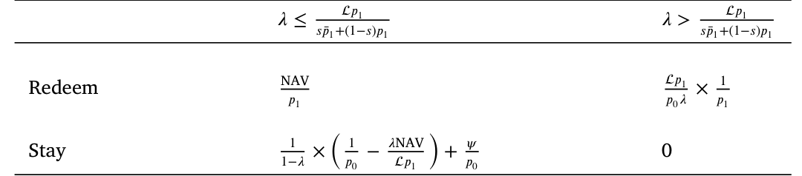
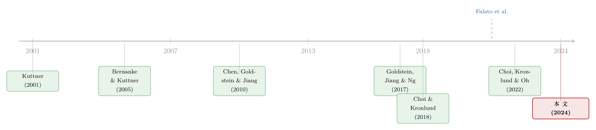

加息前夜的悄然撤离：当「算不准的净值」反而成了基金的减震器
本文读的是 Kuong, O'Donovan & Zhang (2024, Journal of Financial Economics)：在美联储宣布加息的前后几天，资金会成规模地从公司债共同基金流出。作者用一个「净值陈旧 + 策略性赎回」的模型把它讲清楚——投资者抢在 NAV 下调之前赎回，去赚那一段「定价时滞」的钱。更反直觉的是：陈旧的净值在市场紧张时，反而可能压住赎回，成为一台减震器。
1 一个被忽略的「抢跑」
先讲一个画面。
美联储公开市场委员会（FOMC）要开会了。市场早在几天前就嗅到了加息的味道——30 天欧洲美元期货（Eurodollar Futures）的报价已经先动了。债券是利率的镜子，利率要涨，债券价格就要跌，持有这些债券的公司债基金，它的内在价值理应同步往下走。
可奇怪的事情发生了：基金每天披露的净资产值（net-asset-value, NAV），却没有立刻跟着掉下来。
这就留下了一道缝。基金份额在这几天里被「高估」了——你手里这一份，账面上还按昨天的价算，而它真实的价值已经悄悄缩水。聪明的投资者会怎么做？当然是趁净值还没下调，按当前 NAV 把份额赎回，落袋为安。于是，在 FOMC 开会之前，资金就开始往外流。
这正是本文记录下来的一个程式化事实：公司债基金在加息公告前后几天出现总量层面的资金外流。作者给它起了个名字——「流出—ΔFFTar 敏感性」（outflow–ΔFFTar sensitivity，FFTar 即联邦基金目标利率）。
一个用来掂量它有多大的参照系，是货币政策的「存款渠道」（Drechsler, Savov & Schnabl, 2017）。本文发现，公司债基金的流出对加息的敏感度，是银行存款的两倍（见 Table 3）。如今公司债基金的规模已超过 3 万亿美元，约为银行存款的五分之一——这道缝，已经大到不能不看了。
2 把故事拆成三步：识别策略
要把「抢跑」从一堆噪音里干净地识别出来，作者用的是事件研究（event study）——在 FOMC 会议这个窄窗口前后，用日频的资金流数据来看。整个论证拆成环环相扣的三步。
首先，得证明「市场确实提前知道了」。作者发现，30 天欧洲美元期货利率能够预测未来 FFTar 的变动。换句话说，关于未来政策利率的新信息，在会议之前几天就已经渗进了市场价格里。这一步是整条逻辑的地基：没有「提前知道」，后面的「抢跑」就无从谈起。
接着，一个自然的问题是：基金的净值反应了吗？没有。作者证明 NAV 是「陈旧」（stale）的——上面那些欧洲美元利率的变动，能够预测随后 NAV 的下跌，而且这种预测力一直持续到会议后约一周。这说明基金份额在 FOMC 前后、大约一个 10 天的窗口里，是被暂时高估的。
为什么公司债基金的 NAV 会这么「迟钝」？因为它的净值是用组合里债券的成交价算出来的，而大多数公司债一天都成交不到一次。Friewald et al. (2012) 给过一个数字：2004 年 10 月到 2008 年 12 月，公司债的平均成交间隔是 4.46 天。债券好几天没人交易，NAV 自然就停在原地，对新闻「充耳不闻」。
然后，把前两步接起来：既然信息提前到、净值又不动，那资金应该提前流出。作者发现，同样是这些欧洲美元利率的变动，确实能预测会议前后的资金外流；而且——这是关键的一笔——净值越陈旧的基金，流出反应越强。
把链条连起来就是：信息提前泄露 → NAV 陈旧不动 → 份额暂时高估 → 投资者策略性赎回套利。
为了排除「这只是货币政策让大家从债券整体换仓去买股票」的解释，作者做了一个漂亮的安慰剂（placebo）：股票基金里没有显著的流出—ΔFFTar 关系。这与机制完全自洽——股票基金的 NAV 几乎没有陈旧性（样本里公司债基金的陈旧度均值是 31.3%，股票基金只有 4.5%），没有那道缝，自然就没有抢跑。他们还顺手排除了 Choi & Kronlund (2018) 记录的「逐利」（reaching-for-yield）渠道。
3 数据
- 利率与政策：FFTar 与 FOMC 会议日期来自美联储与
FRED；30 天联邦基金期货来自CME；30 天欧洲美元期货来自Bloomberg与FRED。 - 基金：日频与基金特征来自
CRSPSurvivor-Bias-Free 共同基金库与Morningstar Direct，按 Berk & van Binsbergen (2015) 用 ticker 合并。 - 观测单位：基金份额（fund share）。日频样本为
2009 年 1 月–2023 年 6 月，含3,182只独立基金份额；月频样本为1992 年 1 月–2023 年 6 月，含6,251个份额类别、2,447只基金。 - 关键过滤：剔除 ETF 与 ETN（它们的赎回机制不同，不在模型射程内）；为缓解日频 TNA 申报口径不一致的问题，分析一律用 FOMC 前后至少 5 天窗口的累计资金流。
4 量级：这道缝值多少钱
口说无凭，看数字。
用欧洲美元期货预测未来 FFTar，FFTar 每上升 25 个基点，平均而言：
- FOMC 会议前的 4 天窗口里，公司债基金流出
0.164%（占总净资产 TNA）。这相当于用月频数据估出的流出—ΔFFTar 敏感性的三分之一——也就是说，仅仅是会前这几天的「抢跑」，就能解释月度关系里至少三分之一。 - 对高陈旧度的基金，效应更大：会前 4 天流出
0.216%。这个量级，已经和 Falato et al. (2021) 记录的 COVID 期间债券基金0.3%的周度外流相当。 - 如果把窗口拉到错价仍然存在的 10 天，效应升到
0.428%。
再看总量层面的回归（Table 3）：FFTar 每升 25 个基点，对应公司债基金 1.22% 的年度外流（列 1 的系数 4.878% 除以 4），是核心存款效应的两倍多；月频更猛，列 4 显示 0.319% 的月度外流，折合年化 3.828%。
这些都不是「显著但微不足道」的小数，而是经济上结结实实的量级。
5 模型：为什么陈旧的净值，反而能当刹车
到这里，实证已经讲清了「抢跑」。但真正关键的一步在于：作者要回答两个实证讲不了的问题——降低净值的陈旧性，是不是永远是好事？在什么样的货币政策环境下，这个机制最危险？于是他们搭了一个策略性赎回的模型。
5.1 设定与收益矩阵
舞台很简单。投资者在收到关于未来利率的信号后，更新对基金内在价值的判断，然后在两件事里二选一：按 NAV 赎回，还是留在基金里。当一部分人赎回、基金经理被迫折价抛售资产去应付赎回时，留下来的人要替走掉的人承担这笔流动性成本——这就是经典的赎回外部性（redemption externality），它制造出「先跑为赢」的先动优势（Chen, Goldstein & Jiang, 2010）。
下面这张收益矩阵（Table 1）刻画了投资者在赎回 / 留下两种选择下、在不同份额比例 λ 区间里拿到的收益。它是后面所有比较静态的源头。

Table 1: summarizes the payoff of fund investors at 𝑇 . Suppose a
5.2 均衡：一个赎回阈值
模型的均衡是一个阈值策略：当 NAV 相对内在价值 V 的比值高过某个临界点时，投资者就赎回。
$$\text{Redeem} \quad\Longleftrightarrow\quad \frac{\text{NAV}}{V} \;>\; \nu^{*}$$
而这个均衡阈值 ν* 满足如下形式（论文 Eq. 7）。我们把它的三块拆开来看：
a1 | 分子：刻画「留下」相对「赎回」的相对吸引力 a2 | s：NAV 的陈旧度（staleness），越大则净值越不跟随新信息调整 a3 | g(δ,ψ)：均衡函数，δ 度量利率冲击带来的潜在错价幅度、ψ 度量市场流动性成本（越不流动 ψ 越大）；由附录证明，g 对 δ、ψ 都递减（∂g/∂δ < 0，∂g/∂ψ < 0）
这个看似抽象的式子，藏着两个干净的比较静态结论（作者在附录里给出严格证明）：
$$\operatorname{sign}\!\left(\frac{\partial \nu^{*}}{\partial \delta}\right) = \operatorname{sign}\!\left(-\frac{\partial g}{\partial \delta}\right) > 0, \qquad \operatorname{sign}\!\left(\frac{\partial \nu^{*}}{\partial s}\right) = \operatorname{sign}\big(g(\delta,\psi)-1\big)$$
第二个式子是全篇的「文眼」：陈旧度 s 对赎回阈值的影响，符号取决于 g 是否大于 1——而 g 的大小由市场流动性 ψ 决定。流动性好（ψ 小）时是一回事，流动性差（ψ 大）时就反了过来。
5.3 用 \$2 和 \$4 把直觉讲透
公式不直观，作者给了一个极漂亮的算术例子。假设新闻到来后内在价值变动 \$4，而因为陈旧，NAV 当下只调整一半，即 \$2。
先看市场流动性高的情形。 这时大家不担心别人赎回，行为更像套利者：均衡策略是「高估 \$2 以上就赎回」。高估 \$2，恰好发生在内在价值跌 \$4、NAV 只跌 \$2 时。而越陈旧的基金，NAV 跌得越少，份额就被高估得越多——于是触发更多流出。结论：流动性好时，陈旧度放大了赎回。
再看市场流动性低的情形。 此时投资者极度担心别人赎回带来的折价损失，预设的姿态是「想跑」，只有在份额被低估到一定程度时才会被劝住——均衡策略变成「低估 \$2 以内（含）才赎回」。低估 \$2，发生在内在价值涨 \$4、NAV 只涨 \$2 时。而越陈旧的基金，NAV 涨得越少，份额被低估得越多，反而降低了赎回的动机。
于是反转出现了：在市场紧张、流动性枯竭的时候，陈旧的净值不是火上浇油，而是一台减震器——它压住了恐慌性赎回。这就解释了一个一直没人讲透的现象：为什么对 NAV 有一定裁量权的基金经理，愿意保留一些陈旧性。
5.4 两个新假说
把上面的直觉系统化，模型吐出两个（据作者所知）文献里全新的假说，而且都拿到了强实证支持：
- 假说一（陈旧度 × 流动性）：当流动性低（高）时，陈旧度削弱（强化）流出—ΔFFTar 敏感性。即陈旧度在市场困境中稳定了资金流。实证上，在流动性差的基金或市况里，高陈旧度基金的流出与低陈旧度基金相当、甚至更少。
- 假说二（利率环境 × 流动性）：当流动性低（高）时，流出—ΔFFTar 敏感性在低利率环境下更弱（强）。直觉是：低利率拉长了债券久期、放大了潜在错价；流动性高时这会鼓励流出，流动性低时则抑制流出。实证发现：在宽松货币 + 流动性充裕的月份，流出—ΔFFTar 敏感性最强；而在压力期或加息周期的紧缩区间，资金外流最为凶猛。
这两条直接通向政策含义，且都带着「反直觉」的味道：第一，旨在「降低 NAV 陈旧性」的政策，在市场困境时可能适得其反，反而加剧脆弱性——前提是要把「陈旧」和「市场不流动」这两件常被混为一谈的事分开来看；第二，央行加息时，得把对公司债基金的潜在冲击算进去，尤其是在紧缩周期叠加市场困境的时候。
6 文献脉络
把这条线捋一捋，本文的位置就清楚了。
最早一支，是开放式基金的脆弱性。Chen, Goldstein & Jiang (2010) 用模型说清了「赎回—抛售—成本由留下者承担」如何制造先动优势，引出业绩差时的大规模外流；Goldstein, Jiang & Ng (2017) 把它带到公司债基金，并发现资产不流动会放大这种敏感性。再往前，它的理论根子在 Goldstein & Pauzner (2005) 的银行挤兑与 Morris & Shin (2003) 的全局博弈。

第二支，是货币政策如何影响资产价格与中介。从 Kuttner (2001)、Bernanke & Kuttner (2005) 用 FOMC 当天的「利率意外」解释国债与股票价格，到 Drechsler, Savov & Schnabl (2017) 的存款渠道，再到 Feroli et al. (2014)、Banegas et al. (2016)、Fang (2022) 记录货币政策与债券基金资金流的关系。（关于「央行如何亲手制造同一现金流的两个价格」，可参见《同样的现金流，两个价格：当央行亲手掰断了套利这根杠杆》；关于加息可信度如何变成股市风险因子，可参见《加息到底有没有用？》。）
第三支，是陈旧定价本身。Choi, Kronlund & Oh (2022) 的「Sitting bucks」证明了陈旧定价会加剧流量—业绩敏感性。
本文站在这三支的交汇处，做了两件事：其一，提供一个基于 NAV 陈旧定价的理论机制，从而能预测机制在哪些情形下最强；其二，用日频与月频数据紧致地识别这个机制，证明它能解释观察到的流出—ΔFFTar 敏感性中相当大的一块。它的独到贡献，是把脆弱性的来源从「个体基金的业绩」推进到「货币政策叠加陈旧定价造成的总量层面脆弱性」，并揭示了陈旧度在低流动性时稳定资金流的新机制。
7 评论与延伸（Q&A + 研究方向）
(a) 几个可能的疑问
Q：「陈旧定价」和「市场不流动」不是一回事吗？凭什么要分开？
不是。陈旧是指 NAV 对新信息反应慢（计价时滞），不流动是指抛售资产有成本（折价）。本文的核心洞见恰恰是二者的交互：陈旧度对赎回阈值的影响，符号由流动性 ψ 决定——流动性高时陈旧放大赎回，流动性低时陈旧抑制赎回。把两者混为一谈，就会得出「降低陈旧总是好的」这种可能帮倒忙的政策结论。
Q：欧洲美元期货预测 FFTar，会不会只是「利率本身有惯性」，跟基金没关系？
这正是作者用安慰剂检验来防的。如果只是利率惯性驱动的「整体换仓」，股票基金也该有反应；但股票基金里没有显著的流出—ΔFFTar 关系。而股票基金 NAV 的陈旧度只有
4.5%（债券基金是31.3%），「没有陈旧 → 没有抢跑」与机制严丝合缝，这个负结果反而是有力的证据。
Q：会前的资金流出，会不会是基金经理预判性地调仓、而非投资者赎回？
作者衡量的是份额层面的资金净流（flow），即投资者申购/赎回行为，而非基金内部的资产买卖。且「陈旧度越高、流出越强」这一横截面规律，指向的是投资者在套利「定价时滞」，而不是经理人的主动操作——后者无法解释为什么偏偏是 NAV 更迟钝的基金流出更多。
Q：「陈旧度稳定资金流」听上去太反直觉了，可信吗？
它有清晰的机制和实证两条腿。机制上：流动性枯竭时投资者本就「想跑」，只有份额被低估才会被劝住，而陈旧让 NAV 在利空时跌得更少（即更不显得低估），从而减少了留下的相对吸引力的损失，压住赎回。实证上：在不流动的基金或市况里，高陈旧度基金的流出并不比低陈旧度基金更多、甚至更少。这也解释了基金经理为何乐于保留一些陈旧性。
Q：这个渠道和银行的「存款渠道」是替代还是互补？
互补，但量级更大。两者都是货币政策通过「可即时赎回的负债 + 长期资产」的流动性转换来传导。本文发现公司债基金的流出对加息的敏感度是核心存款的两倍多，且基金规模已达存款的约五分之一，说明非银中介是一条被低估的、独立的传导与脆弱性来源。
Q：把 ETF 排除掉，会不会丢掉了市场最重要的一块？
作者明说 ETF 的赎回机制（授权参与商的实物申赎、二级市场交易）与开放式基金根本不同，套利「定价时滞」的逻辑不适用，因此放在模型与实证射程之外是合理的。但这也意味着：ETF 是否、以及如何分担或转移了这条脆弱性，是一个本文没有回答、值得单独做的问题。
(b) 几个可能的研究问题与提案
1. 外资持有人会放大还是熨平这条「加息抢跑」？
【经济故事】美联储加息时，本币与利率同时变动，外资持有人面对的是「利率风险 + 汇率风险」的叠加，其赎回的临界点可能与本土投资者系统性不同——他们或许更早跑（汇率对冲成本上升），也可能更黏（再配置摩擦高）。这会改变 NAV 陈旧定价造成的总量脆弱性。 【可行性】中。需要基金份额层面的投资者地域构成（如 Morningstar 的跨境份额、或 TIC 数据），与本文的 FOMC 事件窗口框架结合做异质性回归。识别上可沿用其欧洲美元期货预测 FFTar 的设计，难点在投资者国别数据的颗粒度。
2. 把同一机制搬到「外资为主」的新兴市场公司债基金上。
【经济故事】本文记录的是美国国内的传导。在外资占比高的新兴市场，加息（无论本国还是美联储）引发的 NAV 陈旧 + 策略性赎回，可能与「资本外逃」叠加，产生更剧烈的流动性螺旋。陈旧度的「减震」效应在这里是否还成立，是个开放问题。 【可行性】中偏低。需要新兴市场公司债基金的日频资金流与 NAV，数据可得性是主要瓶颈；识别可借用美联储 FOMC 作为对新兴市场的外生冲击。
3. 摆动定价（swing pricing）真能掐断这条抢跑吗？
【经济故事】Jin et al. (2022) 表明摆动定价能削弱困境期的先动优势。但本文揭示陈旧度本身在低流动性时就有稳定作用——那么摆动定价与陈旧度是替代还是互补？强行降低陈旧、同时上摆动定价，会不会反而过度抑制了正常赎回？ 【可行性】高。可利用美国 2024 年后部分基金引入摆动/反稀释机制的时点，或英国（Jin et al. 已用过 U.K. 数据）做 DiD，把 FOMC 事件窗口的流出敏感性作为结果变量。
4. 给「陈旧度」一个更干净的外生变动。
【经济故事】本文的陈旧度是用「NAV 不动的交易日占比」代理的横截面变量，可能与基金的资产组成、规模内生相关。若能找到一个外生改变陈旧度的冲击（如某类债券定价服务的引入、或会计估值规则变更），就能更可信地分离「陈旧」与「不流动」。 【可行性】中。需要识别一次只影响计价时滞、不影响真实流动性的制度变更；这类「干净楔子」难找，但一旦找到，价值很高。
5. 公司债二级市场的流动性接盘人，在加息抢跑中扮演什么角色？
【经济故事】基金被迫抛售时，谁在另一头接？接盘人的容量决定了 ψ 的高低，进而决定陈旧度是放大还是稳定赎回。把交易商/接盘投资者的资产负债表状态接进本文框架，能内生化 ψ。（关于谁来接这一大笔债券，可参见《谁来接住这一大笔债券？》。） 【可行性】中。需 TRACE 成交数据识别公司债大宗交易的接盘方，与基金赎回事件对齐；识别难点在于把「接盘容量」与「赎回冲击」分离。
8 我的判断与参考文献
贡献。这篇文章最漂亮的地方，是把一个含混的政策直觉——「降低净值陈旧性总是对的」——用一个干净的模型掰成了两半：陈旧在流动性好时是放大器，在流动性差时是减震器。三步式的事件研究识别也很扎实，欧洲美元期货 → FFTar → NAV 下跌 → 资金流出，每一环都给了可验证的预测，且用股票基金做了说服力很强的安慰剂。把脆弱性的源头从「个体业绩」推到「货币政策 × 陈旧定价的总量脆弱性」，是实打实的推进。
对识别的担忧。我有两点保留。其一，陈旧度作为代理变量（NAV 不动的交易日占比）很可能与基金的资产构成、规模、甚至经理人的估值策略内生相关，横截面上「高陈旧 → 高流出」的解读，仍需要一个更外生的陈旧度变动来加固（见上面研究提案 4）。其二，模型里 g(δ,ψ) 的关键比较静态依赖于把「流动性 ψ」当作外生参数，而现实中流动性恰恰会在加息时内生地恶化——ψ 与 ΔFFTar 同向变动，可能让「陈旧 × 流动性」的交互项更难干净识别。
后续想看的。我最想看到的是把这条机制接到外资持有人与二级市场接盘容量上：前者关系到这条脆弱性会不会沿着汇率渠道外溢，后者把 ψ 从外生参数变成可观测、可内生化的量。如果再能找到一次只动「计价时滞」而不动「真实流动性」的制度变更，这篇文章的政策含义就能从「相关」升级为「因果」。
参考文献
- Banegas, A., Montes-Rojas, G., Siga, L. (2016). Mutual fund flows, monetary policy and financial stability. Finance and Economics Discussion Series 2016(071), 1–58.
- Bernanke, B. S., Kuttner, K. N. (2005). What explains the stock market's reaction to Federal Reserve policy? Journal of Finance 60(3), 1221–1257.
- Berk, J. B., van Binsbergen, J. H. (2015). Measuring skill in the mutual fund industry. Journal of Financial Economics 118(1), 1–20.
- Chen, Q., Goldstein, I., Jiang, W. (2010). Payoff complementarities and financial fragility: Evidence from mutual fund outflows. Journal of Financial Economics 97(2), 239–262.
- Choi, J., Kronlund, M. (2018). Reaching for yield in corporate bond mutual funds. Review of Financial Studies 31(5), 1930–1965.
- Choi, J., Kronlund, M., Oh, J. Y. J. (2022). Sitting bucks: Stale pricing in fixed income funds. Journal of Financial Economics 145(2), 296–317.
- Drechsler, I., Savov, A., Schnabl, P. (2017). The deposits channel of monetary policy. Quarterly Journal of Economics 132(4), 1819–1876.
- Falato, A., Goldstein, I., Hortaçsu, A. (2021). Financial fragility in the COVID-19 crisis: The case of investment funds in corporate bond markets. Journal of Monetary Economics 123, 35–52.
- Fang, C. (2022). Monetary policy amplification through bond fund flows. Working Paper.
- Feroli, M., Kashyap, A. K., Schoenholtz, K. L., Shin, H. S. (2014). Market tantrums and monetary policy. SSRN Electronic Journal.
- Friewald, N., Jankowitsch, R., Subrahmanyam, M. G. (2012). Illiquidity or credit deterioration: A study of liquidity in the US corporate bond market during financial crises. Journal of Financial Economics 105(1), 18–36.
- Goldstein, I., Jiang, H., Ng, D. T. (2017). Investor flows and fragility in corporate bond funds. Journal of Financial Economics 126(3), 592–613.
- Goldstein, I., Pauzner, A. (2005). Demand-deposit contracts and the probability of bank runs. Journal of Finance 60(3), 1293–1327.
- Jin, D., Kacperczyk, M., Kahraman, B., Suntheim, F. (2022). Swing pricing and fragility in open-end mutual funds. Review of Financial Studies 35(1), 1–50.
- Kuong, J. C.-F., O'Donovan, J., Zhang, J. (2024). Monetary policy and fragility in corporate bond mutual funds. Journal of Financial Economics 161, 103931.
- Kuttner, K. N. (2001). Monetary policy surprises and interest rates: Evidence from the fed funds futures market. Journal of Monetary Economics 47(3), 523–544.
- Morris, S., Shin, H. S. (2003). Global games: Theory and applications. Advances in Economics and Econometrics, 56–114.